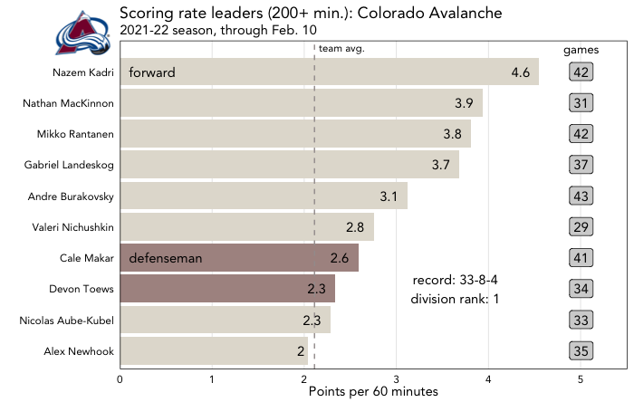
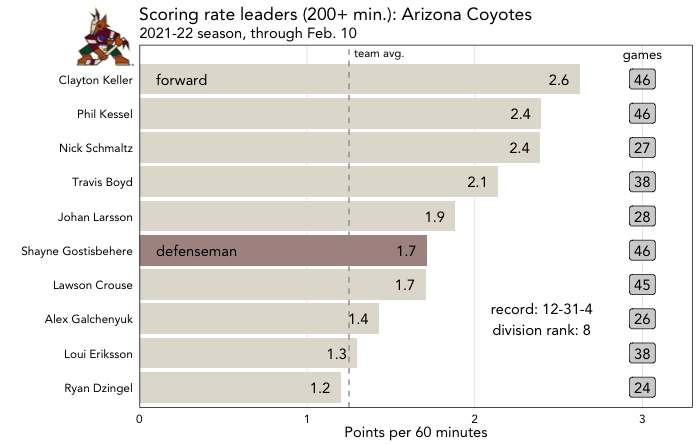
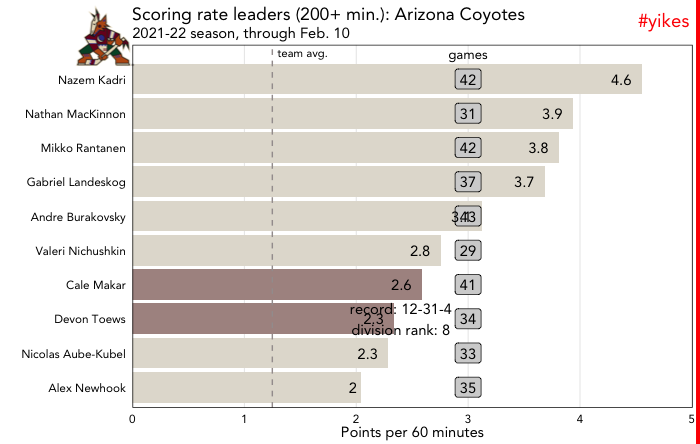
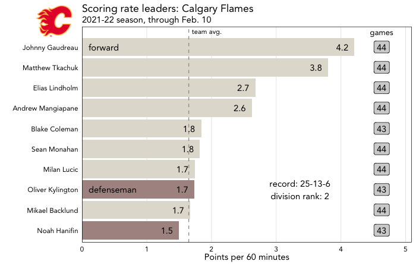

There is definitely a steep learning curve to using ggplot2 to make plots in R, and in my experience, there are several stages to that learning curve:
Stage 1: Have to look up how to code every single element whenever you’re just trying to make a f$*&ing bar graph.
Stage 2: Can make basic plots without looking things up!
Stage 3: Have learned about labels and themes and reference lines and annotations, and plots start to look much better.
Stage 4: Can make plots that are customized but in a flexible way so they’re robust to new and/or changing data.
Stage 5: Have learned all there is to know about know about ggplot2 and never have to google a thing. (I have not reached this stage so cannot independently confirm that it exists.)
This post is for people in stage 3 who would like to move into stage 4. Stage 3, where you’re learning to take advantage of all the customization that ggplot2 offers, is an awesome stage. That’s where you learn all about how to layer different plot elements together to get a plot that looks exactly how you want.
But a custom plot that is hard-coded to work perfectly for one subset of data, like a certain species of penguin or a certain sports team, might not look good if that data gets updated or if you want to use another group instead. This post will introduce a few techniques, like mapping more data elements to visual properties and using the glue function to combine string text with R expressions, to handle customizations in a more flexible way.
The end goal of this post will be a single function to create the following plot for any NHL team. (Hockey knowledge and/or interest is not at all required for this example. Those interested in data viz only can proceed straight to the ggplot2 code, while hockey folks can make a pit stop at the hockeyR code.)

Getting the data ready to plot
The plot we’ll be making today requires four packages:
library(tidyverse)
library(hockeyR)
library(cowplot)
library(glue)If you’re familiar with ggplot2, the tidyverse presumably needs no explanation. It will load not only ggplot2 but also packages like tidyr, dplyr, and stringr, which have handy functions that we need to clean and prep this data.
hockeyR is a very useful package for loading NHL data—play-by-play data most notably, but also roster data and other useful information.
The cowplot package by Claus Wilke is used to combine plots, add images to plots, etc. I wrote a brief introduction here.
glue makes it easy to combine literal strings with R expressions and/or data items.
The data from hockeyR requires quite a bit of prep to get it into a structure that we want for this plot. All of that code is available by expanding the following section:
Data cleaning/prep code:
todays_theme <- function () {
theme_linedraw(base_size=11, base_family="Avenir") %+replace%
theme(
panel.background = element_blank(),
plot.background = element_rect(fill = "transparent", color = NA),
legend.background = element_rect(fill = "transparent", color = NA),
legend.key = element_rect(fill = "transparent", color = NA),
axis.ticks = element_blank(),
panel.grid.major = element_line(color = "grey90", size = 0.3),
panel.grid.minor = element_blank()
)
}
# get pbp data, roster info, and team info from hockeyR
data <- load_pbp(2022)
roster <- get_rosters(team = "all", season = 2022)
team_info <- team_logos_colors
position <- roster %>%
select(player, position) %>%
unique() %>%
mutate(position = case_when(position == "F" ~ "forward",
TRUE ~ "defenseman"))
# calculate the total points for each player
points <- data %>%
# want all goals except for those in the shootout
filter(event_type == "GOAL" & period != 5) %>%
# event players 1-3 are those who might get points on each goal
select(game_id, game_date, team = event_team_abbr, event_player_1_name,
event_player_2_name, event_player_3_name, event_player_1_type,
event_player_2_type, event_player_3_type) %>%
# this will create a name/type combo for players 1 through 3
pivot_longer(event_player_1_name:event_player_3_type,
names_to = c(NA, ".value"),
names_pattern = "(.+)_(.+)") %>%
# only want the players who either scored the goal or got an assist
filter(type %in% c("Assist", "Scorer")) %>%
count(name, team, name = "points") %>%
mutate(name = str_replace_all(name, "\\.", " "))
# calculate TOI for each player
TOI <- data %>%
# create a variable for the length of each event
mutate(length = case_when(lead(game_id) == game_id ~
lead(period_seconds) - period_seconds,
TRUE ~ 0)) %>%
select(length, game_id, home_abbreviation, away_abbreviation,
home_on_1:away_on_7) %>%
filter(length > 0) %>%
pivot_longer(home_on_1:away_on_7,
names_to = "team",
values_to = "name") %>%
filter(!is.na(name)) %>%
mutate(team = ifelse(str_detect(team, "home"), home_abbreviation,
away_abbreviation)) %>%
select(-c(3:4)) %>%
group_by(name, team) %>%
# calculate total TOI and games played
summarize(TOI = sum(length) / 60,
GP = n_distinct(game_id)) %>%
mutate(name = str_replace_all(name, "\\.", " ")) %>%
filter(TOI > 200 & !(name %in% c("Marc Andre Fleury",
"Ukko Pekka Luukkonen"))) %>%
# need to make some name adjustments to account for discrepancies in the data
mutate(name = case_when(name == "Drew O Connor" ~ "Drew O'Connor",
name == "Logan O Connor" ~ "Logan O'Connor",
name == "Liam O Brien" ~ "Liam O'Brien",
name == "Ryan O Reilly" ~ "Ryan O'Reilly",
name == "Jean Gabriel Pageau" ~ "Jean-Gabriel Pageau",
name == "K Andre Miller" ~ "K'Andre Miller",
name == "Marc Edouard Vlasic" ~ "Marc-Edouard Vlasic",
name == "Pierre Edouard Bellemare" ~ "Pierre-Edouard Bellemare",
name == "Nicolas Aube Kubel" ~ "Nicolas Aube-Kubel",
name == "Oliver Ekman Larsson" ~ "Oliver Ekman-Larsson",
name == "Pierre Luc Dubois" ~ "Pierre-Luc Dubois",
name == "Ryan Nugent Hopkins" ~ "Ryan Nugent-Hopkins",
name == "Zach Aston Reese" ~ "Zach Aston-Reese",
TRUE ~ name)) %>%
# join in points data to calculate rate
left_join(points, by = c("name", "team")) %>%
mutate(points = replace_na(points, 0),
pts_per_60 = points * 60 / TOI)
top_points <- TOI %>%
left_join(position, by = c("name" = "player")) %>%
# filter to only the top 10 players per team
group_by(team) %>%
top_n(10, pts_per_60) %>%
left_join(select(team_info, full_team_name, team = team_abbr),
by = "team")A hard-coded plot

The goal here is to create a plot that shows the top scorers (by scoring rate, or points per 60 minutes) for a single NHL team this season. The prep code in the previous section ends with a data frame called top_points, which has 320 observations (10 players per team) and several variables, including the player’s team, position, games played, and points rate.
This is a selection of a single observation from the top_points data frame:
| name | team | GP | pts_per_60 | position | full_team_name |
|---|---|---|---|---|---|
| Clayton Keller | ARI | 46 | 2.625 | forward | Arizona Coyotes |
What are some of the specific customizations that have been used in the code below to generate the above plot?
The title argument within the labs layer specifies the “Arizona Coyotes.”
In order to avoid a color legend, a specific forward and a specific defenseman are labeled as such (in the first mutate function). Those labels are applied in the first geom_text layer.
There is an extra bit of info, the games played, added to the right side of this plot as an annotation. The first annotate layer places the “games” label at a specific x value, and the geom_label layer right below places that games played data at that same x value.
The second annotate layer includes some text on the team’s record and division standing.
There’s a reference line, the geom_vline layer, to represent the team average scoring rate.
There’s a logo in the upper-left corner, added by specifying the image URL in cowplot’s draw_image function.
single_team <- top_points %>%
filter(team == "ARI")
plot <- single_team %>%
# creates a "position" label for select players
mutate(label = case_when(str_detect(name, "Keller") |
str_detect(name, "Shayne") ~ position,
TRUE ~ NA_character_)) %>%
# creates a bar graph with scoring rate on x, name on y, colored by position
ggplot(aes(x = pts_per_60, y = reorder(name, pts_per_60), fill = position)) +
geom_bar(stat = "identity") +
# specifies the bar colors
scale_fill_manual(values = c("#AD9490","#E2DED4")) +
# creates an annotation for games played data on the right side of the plot
annotate("text", x = 3, y = 11, vjust = 1.5,
label = "games", size = 3.5, family = "Avenir") +
geom_label(data = single_team, aes(x = 3, label = GP), fill = "#d3d3d3",
family = "Avenir") +
labs(x = "Points per 60 minutes",
y = "",
title = "Scoring rate leaders (200+ min.): Arizona Coyotes",
subtitle = "2021-22 season, through Feb. 10") +
# adds a dashed reference line with a label
geom_vline(xintercept = 1.25, linetype = "dashed", color = "#a39d9d") +
annotate("text", x = 1.25, y = 11, label = "team avg.", size = 3,
hjust = -0.1, vjust = 1.5, family = "Avenir") +
# adds the two position labels
geom_text(aes(label = label), x = 0.1, hjust = 0, family = "Avenir") +
# labels the inside of the bar with each player's scoring rate
geom_text(aes(label = round(pts_per_60, 1)), vjust = 0.5, hjust = 1.5,
family = "Avenir") +
# adds the standings information to the lower right corner of the plot
annotate("text", x = 2.4, y = 3,
label = "record: 12-31-4\ndivision rank: 8", family = "Avenir") +
# places the bar right up against the y-axis, with a bit of space to the right
scale_x_continuous(expand = expansion(mult = c(0, .1))) +
todays_theme() +
theme(panel.grid.major.y = element_blank(),
legend.position = "none")
ggdraw() +
draw_plot(plot) +
draw_image("https://a.espncdn.com/i/teamlogos/nhl/500/ARI.png",
x = -0.35, y = 0.42, scale = 0.15)Now, this could be fine if this was the only plot you ever wanted to create with this data. But what happens if, in that single_team data frame that feeds the plot, you replace ARI with a different team?
Strengthening your code

Running that exact same code and substituting the Colorado Avalanche for the Arizona Coyotes results in the above plot. And it’s not pretty! The mapped data (i.e., the players, the length and label of the bars, and the games played data) looks fine. But everything else that we customized via hard-coding looks terrible and/or is flat-out wrong. The logo, the title, the placement of the annotations, the text in the annotation, the reference line…all off. You could copy-and-paste the original code and update all the things hard-coded in the previous section for Arizona to instead work for Colorado, but please don’t. Each of these items can be adjusted to pull from the data and update automatically, like the basic data did here.
The title
old code
title = "Scoring rate leaders (200+ min.): Arizona Coyotes"glue is an extremely useful function for combining text with R expressions and/or variables. Instead of hard-coding “Arizona Coyotes” like in the old code above, we can simply replace the specific team name with {unique(single_team$full_team_name)}, which will pull the full_team_name variable from the single_team data frame.
new code
title = glue::glue("Scoring rate leaders (200+ min.): {unique(single_team$full_team_name)}")(Note: this particular example can also be achieved with a base function like paste0. I personally find the glue syntax easier to read since you can drop the R syntax, enclosed by curly brackets, right into the string itself. The glue package also has also useful functions like glue_data and glue_collapse.)
The color “legend”
mutate(label = case_when(str_detect(name, "Keller") |
str_detect(name, "Shayne") ~ position,
TRUE ~ NA_character_))
geom_text(aes(label = label), x = 0.1, hjust = 0, family = "Avenir")In this plot, the bars are colored by the player’s position. In order to avoid a color legend, in the old code above, a mutate function created a new variable called label to list the position for the first forward (Clayton Keller) and the first defenseman (Shayne Gostisbehere). Then those labels are applied with a geom_text layer.
This method obviously does not work if those players change! Instead, group the data by position and update the conditional statement of the label variable to only list the position if the scoring rate is equal to the maximum scoring rate for that position. That way the top player for each position is identified automatically instead of exactly specified. The label is applied in the exact same way with geom_text.
group_by(position) %>%
mutate(label = ifelse(pts_per_60 == max(pts_per_60), position, NA)) %>%
ungroup()
geom_text(aes(label = label), x = 0.1, hjust = 0, family = "Avenir")The annotation placements
annotate("text", x = 3, y = 11, vjust = 1.5,
label = "games", size = 3.5, family = "Avenir")
geom_label(data = single_team, aes(x = 3, label = GP), fill = "#d3d3d3",
family = "Avenir") +This plot has extra data on the right side to show each player’s games played. The title of that column “games” is set via an annotate layer, while the data itself is added with a geom_label layer. The games played data is mapped to the single_team data frame, via the label = GP argument, so that piece updates automatically. It’s the x = 3 argument in both of these layers that does not work—that placement was appropriate in the first example, but the scoring rates for this team are higher, so keeping the placement at x = 3 here overlaps the bars.
Just from looking at this graph, it seems like a placement of x = 5 would be more appropriate in this scenario. But what are we basing that on? The maximum value of the scoring rate, as we want this annotation to sit to the right of the longest bar. This can be done, as in the code below, by setting x equal to the maximum value, max(single_team$pts_per_60), multiplied by some figure to give the plot a bit of breathing room. You would experiment with the multiplier to figure out what works for your data, but in this case, a multiplier of 1.1 works well. So for both the annotate layer to place the title and the geom_label layer to place the data, x is set to max(single_team$pts_per_60) * 1.1.
annotate("text", x = max(single_team$pts_per_60) * 1.1, y = 11, vjust = 1.5,
label = "games", size = 3.5, family = "Avenir")
geom_label(data = single_team, aes(x = max(single_team$pts_per_60) * 1.1,
label = GP),
fill = "#d3d3d3",family = "Avenir")The annotation text
annotate("text", x = 2.4, y = 3,
label = "record: 12-31-4\ndivision rank: 8", family = "Avenir")This plot has another annotation, ideally in the lower-right corner, that lists the team’s record and its rank within its division. In the first example, this was hard-coded with simple text. At the time, the Coyotes’ record was 12-31-4, and they were ranked 8th in their division. But with the play-by-play data that we have, it’s possible to calculate each team’s record and its division standing. That code is below, if you’re interested.
Code to get the records:
# calculate the result of the shootouts by which team has more goals
SO <- data %>%
group_by(game_id) %>%
filter(max(period) == 5) %>%
filter(event_type == "GOAL") %>%
count(game_id, event_team_type) %>%
pivot_wider(names_from = event_team_type, values_from = n) %>%
mutate(SO_result = ifelse(home > away, "home", "away"))
records <- data %>%
# calculate the home and away score and game type, by how many game periods
# 3 periods: regulation; 4: overtime; 5: shootout
group_by(game_id, home_abbreviation, away_abbreviation, home_division_name,
away_division_name) %>%
summarize(home = max(home_final),
away = max(away_final),
period = max(period)) %>%
left_join(select(SO, -c(2:3)), by = "game_id") %>%
# get standings points per game: 2 for win, 1 for OT/SO loss, 0 for reg loss
mutate(home = ifelse(is.na(SO_result) | SO_result == "away", home, home + 1),
away = ifelse(is.na(SO_result) | SO_result == "home", away, away + 1),
home_points = case_when(home > away ~ 2,
home < away & period > 3 ~ 1,
TRUE ~ 0),
away_points = case_when(away > home ~ 2,
away < home & period > 3 ~ 1,
TRUE ~ 0)) %>%
select(-c(home:SO_result)) %>%
pivot_longer(home_abbreviation:away_points,
names_to = c(NA, ".value"),
names_sep = 5) %>%
mutate(win = ifelse(points == 2, 1, 0),
loss = ifelse(points == 0, 1, 0),
OT = ifelse(points == 1, 1, 0)) %>%
group_by(abbreviation, division_name) %>%
# sum the points per team per division
summarize(wins = sum(win),
losses = sum(loss),
OT = sum(OT),
points = sum(points)) %>%
# create the record text that will be used on the plot
mutate(record = str_c(wins, losses, OT, sep = "-")) %>%
group_by(division_name) %>%
arrange(division_name, desc(points)) %>%
# calculate the division rank
mutate(rank = row_number())
team_record <- records %>%
filter(abbreviation == "COL")The code above results in a data frame called team_record, which looks in part like this:
| abbreviation | record | points | rank |
|---|---|---|---|
| COL | 33-8-4 | 70 | 1 |
Now that this data exists in a data frame, we can again use glue to create the text for the annotate layer. And to correctly place the annotation on the plot, we can set the x using the same method discussed in the previous section.
annotate("text", x = max(single_team$pts_per_60) * 0.8, y = 3,
label = glue::glue("record: {team_record$record}
division rank: {team_record$rank}"),
family = "Avenir") +The reference line
geom_vline(xintercept = 1.25, linetype = "dashed", color = "#a39d9d")
annotate("text", x = 1.25, y = 11, label = "team avg.", size = 3,
hjust = -0.1, vjust = 1.5, family = "Avenir") +This plot includes a reference line to show the team average scoring rate. In the hard-coded example, the reference line and its label are both placed at the exact value of the line: xintercept = 1.25 and x = 1.25. But of course this value will shift if a different team is selected, so it’s easier to map it directly to the data.
We can create another new data frame called pts_rate_avg that will calculate avg, or the average scoring rate per team. That value can then define the xintercept in the geom_vline layer and x in the annotate layer.
(You could avoid creating an extra data frame and instead set the x and xintercept equal to (TOI %>% group_by(team) %>% summarize(avg = mean(pts_per_60)) %>% filter(team == "COL"))$avg), but I personally think that’s a bit harder to read.)
pts_rate_avg <- TOI %>%
group_by(team) %>%
summarize(avg = mean(pts_per_60)) %>%
filter(team == "COL")
geom_vline(xintercept = pts_rate_avg$avg,
linetype = "dashed", color = "#a39d9d")
annotate("text", x = pts_rate_avg$avg, y = 11, label = "team avg.", size = 3,
hjust = -0.1, vjust = 1.5, family = "Avenir") +The logo
ggdraw() +
draw_plot(plot) +
draw_image("https://a.espncdn.com/i/teamlogos/nhl/500/ARI.png",
x = -0.35, y = 0.42, scale = 0.15)In the hard-coded example, we used draw_image from the cowplot package to add the team’s logo, via a specific URL. But luckily, the team_info data frame that we got from the hockeyR package back in the initial data prep phase holds the logo URL for each team. A left_join will add that variable, team_logo_espn, into the team_record data frame that we created previously, and then team_record$team_logo_espn can be specified in draw_image instead of the specific URL.
team_record <- records %>%
filter(abbreviation == "COL") %>%
left_join(select(team_info, team_abbr, team_logo_espn),
by = c("abbreviation" = "team_abbr"))
ggdraw() +
draw_plot(plot) +
draw_image(team_record$team_logo_espn,
x = -0.37, y = 0.42, scale = 0.15)Full plot code:
plot <- single_team %>%
group_by(position) %>%
mutate(label = ifelse(pts_per_60 == max(pts_per_60), position, NA)) %>%
ungroup() %>%
ggplot(aes(x = pts_per_60, y = reorder(name, pts_per_60), fill = position)) +
geom_bar(stat = "identity") +
scale_fill_manual(values = c("#AD9490","#E2DED4")) +
annotate("text", x = max(single_team$pts_per_60) * 1.1, y = 11, vjust = 1.5,
label = "games", size = 3.5, family = "Avenir") +
geom_label(data = single_team, aes(x = max(single_team$pts_per_60) * 1.1,
label = GP),
fill = "#d3d3d3",family = "Avenir") +
labs(x = "Points per 60 minutes",
y = "",
title = glue::glue("Scoring rate leaders (200+ min.): {unique(single_team$full_team_name)}"),
subtitle = "2021-22 season, through Feb. 10") +
geom_vline(xintercept = pts_rate_avg$avg,
linetype = "dashed", color = "#a39d9d") +
annotate("text", x = pts_rate_avg$avg, y = 11, label = "team avg.", size = 3,
hjust = -0.1, vjust = 1.5, family = "Avenir") +
geom_text(aes(label = label), x = 0.1, hjust = 0, family = "Avenir") +
geom_text(aes(label = round(pts_per_60, 1)), vjust = 0.5, hjust = 1.5,
family = "Avenir") +
annotate("text", x = max(single_team$pts_per_60) * 0.8, y = 3,
label = glue::glue("record: {team_record$record}
division rank: {team_record$rank}"),
family = "Avenir") +
scale_x_continuous(expand = expansion(mult = c(0, .1))) +
todays_theme() +
theme(panel.grid.major.y = element_blank(),
legend.position = "none")
ggdraw() +
draw_plot(plot) +
draw_image(team_record$team_logo_espn,
x = -0.37, y = 0.42, scale = 0.15)Thanks to all of those adjustments (which are incorporated in the full plot code above), changing the team from the Arizona Coyotes to the Colorado Avalanche results in the plot below, which looks much better than the first attempt.
Creating a function
The code in the previous section works perfectly well to create this plot. However, there are still three separate data frames where the team has to be specified: the main data frame single_team, the data frame with the win-loss record and standing info team_record, and the data frame with the averages to create the reference line pts_rate_avg. That kind of structure begs for a user-defined function—I’ve created plot_fn below, which means creating this plot for any team is as simple as plot_fn("CGY").

plot_fn <- function(team_name) {
single_team <- top_points %>%
filter(team == team_name)
team_record <- records %>%
filter(abbreviation == team_name) %>%
left_join(select(team_info, team_abbr, team_logo_espn),
by = c("abbreviation" = "team_abbr"))
pts_rate_avg <- TOI %>%
group_by(team) %>%
summarize(avg = mean(pts_per_60)) %>%
filter(team == team_name)
plot <- single_team %>%
group_by(position) %>%
mutate(label = ifelse(pts_per_60 == max(pts_per_60), position, NA)) %>%
ungroup() %>%
ggplot(aes(x = pts_per_60, y = reorder(name, pts_per_60), fill = position)) +
geom_bar(stat = "identity") +
scale_fill_manual(values = c("#AD9490","#E2DED4")) +
annotate("text", x = max(single_team$pts_per_60) * 1.1, y = 11, vjust = 1.5,
label = "games", size = 3.5, family = "Avenir") +
geom_label(data = single_team, aes(x = max(single_team$pts_per_60) * 1.1,
label = GP),
fill = "#d3d3d3",family = "Avenir") +
labs(x = "Points per 60 minutes",
y = "",
title = glue::glue("Scoring rate leaders (200+ min.): {unique(single_team$full_team_name)}"),
subtitle = "2021-22 season, through Feb. 10") +
geom_vline(xintercept = pts_rate_avg$avg,
linetype = "dashed", color = "#a39d9d") +
annotate("text", x = pts_rate_avg$avg, y = 11, label = "team avg.", size = 3,
hjust = -0.1, vjust = 1.5, family = "Avenir") +
geom_text(aes(label = label), x = 0.1, hjust = 0, family = "Avenir") +
geom_text(aes(label = round(pts_per_60, 1)), vjust = 0.5, hjust = 1.5,
family = "Avenir") +
annotate("text", x = max(single_team$pts_per_60) * 0.8, y = 3,
label = glue::glue("record: {team_record$record}
division rank: {team_record$rank}"),
family = "Avenir") +
scale_x_continuous(expand = expansion(mult = c(0, .1))) +
todays_theme() +
theme(panel.grid.major.y = element_blank(),
legend.position = "none")
ggdraw() +
draw_plot(plot) +
draw_image(team_record$team_logo_espn,
x = -0.37, y = 0.42, scale = 0.15)
}